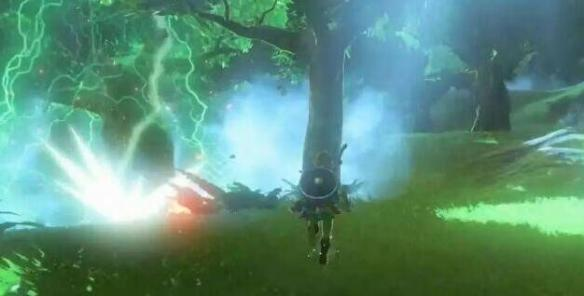

塞尔达传说荒野之息有些玩家卡在了孤岛试炼，不知道怎么顺利过关，下面就给大家带来塞尔达传说荒野之息孤岛试炼过关玩法攻略，一起来看下吧。

孤岛试炼过关玩法攻略
在船靠岸后别上去，扔一个50攻击力的武器在船上，登岛后身上装备全部没收，回去捡那把武器，直接一个蓄力基本两下干死boss，后面就无压力了，不用一点一点磨死boss，记住只带一把武器，别把之前身上的全扔船上，不然孤岛任务结束会没收岛上获得的武器，除非在最后一个球装上之后，扔出身上所有武器在地上，回来在捡。